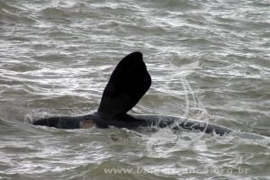
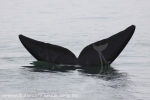

Baleia Franca
As baleias francas são cetáceos de grande tamanho, podendo atingir, segundo registros históricos, mais de 17 metros de comprimento.
O corpo é negro e arredondado, sem aleta dorsal e a cabeça ocupa quase um quarto do comprimento total, nela destacando-se a grande curvatura da boca, que abriga, pendentes, cerca e 250 pares de cerdas da barbatana, que são ásperas e na sua maior extensão negro-oliváceas. O ventre apresenta manchas brancas irregulares. As fêmeas trazem mamilas na região inguinal e glândulas mamárias que podem ser bastante espessas, até cerca de 10cm.
A mais marcante característica morfológica da espécie, entretanto, é o conjunto de calosidades que apresentam as baleias francas no alto e nas laterais da cabeça. Trata-se de estruturas formadas por espessamentos naturais da pele, que nascem já com o animal e são relativamente macias em fetos e filhotes recém-nascidos, mas tornam-se mais rígidas com o crescimento do animal;


As nadadeiras peitorais das baleias franca também são bastante características, com formato trapezoidal.

A coloração do corpo é predominantemente preta, podendo variar ao acinzentado, com manchas brancas no ventre.